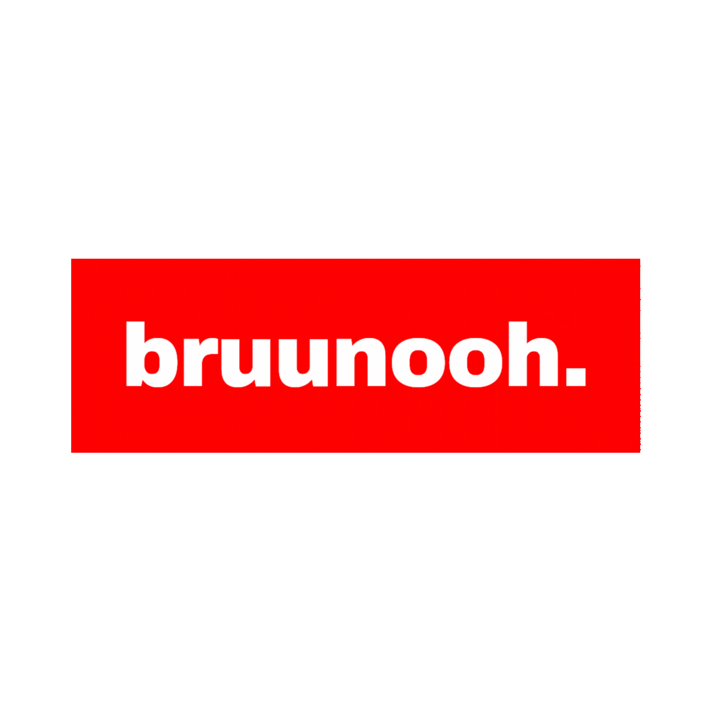

Copyright
Copyright © 2026 bruunooh. Alle Rechte vorbehalten, soweit nicht durch die unten genannte Lizenz eingeräumt.
Lokale Steuerung für animierte Stream-Banner.
Für Streaming-Software: den Player-Link als Browser-Quelle nutzen. Alternativ player.html im selben Browser öffnen.

Lower Third Studio by bruunooh
Copyright © 2026 bruunooh. Alle Rechte vorbehalten, soweit nicht durch die unten genannte Lizenz eingeräumt.
Diese Anwendung ist für nicht-kommerzielle Nutzung unter einer Creative-Commons-Non-Commercial-Lizenz vorgesehen.
Empfohlene Lizenzangabe: CC BY-NC 4.0 - Namensnennung, nicht kommerziell.
Lizenz ansehenPlattformlogos und Markenzeichen gehören den jeweiligen Rechteinhabern. Sie werden nur zur Identifikation der Plattformen verwendet.